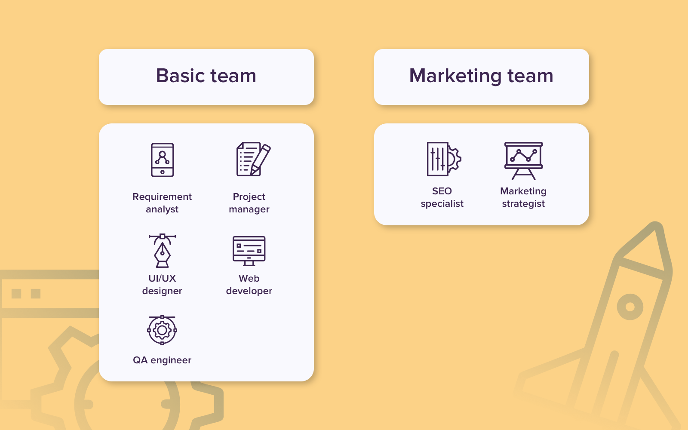
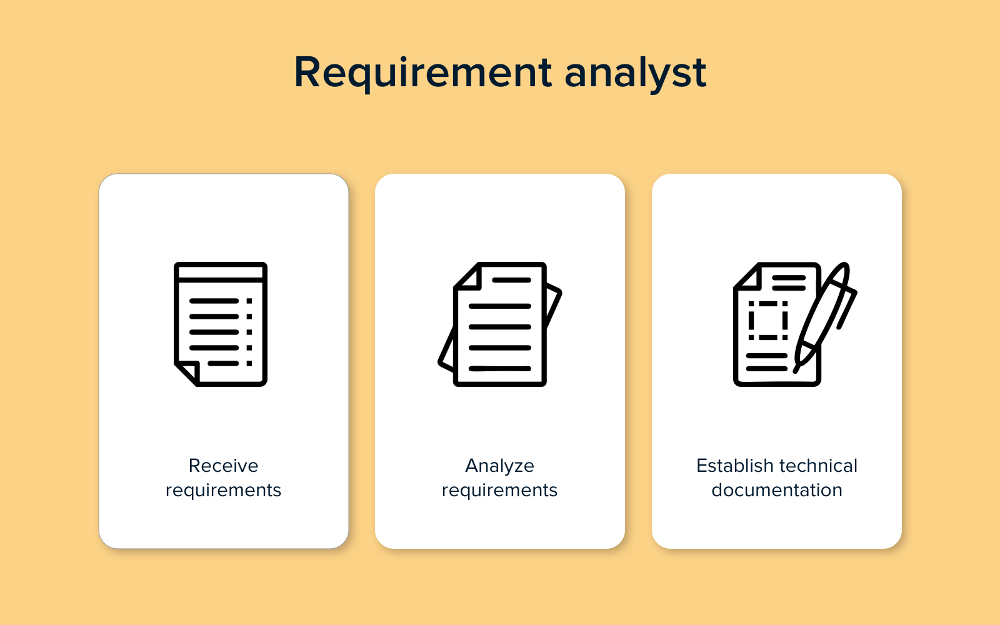

WEB DEV. Team #1 First Topic
As practice shows, programming alone isn't enough to make a website
work for you. That's why many stakeholders pay great attention to
design and marketing. Respectively, your web development team should
fit the project's objectives and consist of specialists with diverse
skills and knowledge.
While some companies provide it's customers with the full circle of
specialists they may need for the project, others do not. That's
especially true for young and narrowly focused firms.
So, every
custom web development company
may have it's own spectrum of services and the number of web
development team members can vary. Let’s consider the core web
development team roles, required skills and talents, that will make
together a strong base for a good team.

Requirement Analyst #2 Second Topic
The main task of this specialist is to take your vision of the
project, analyze it, and translate into comprehensive technical
specifications. In turn, these specifications will be used by the web
development team to set time frames and get ready for the project.
Whether you're going to
create a SaaS application
for retail operations or marketing project software for digital
agencies, the first question an analyst will ask you is, “What goals
do you want to accomplish with your product? First of all, the
requirements analyst needs to define your business needs.
However, the web development team won’t be able to create an actual
product based on raw requirements. A business analyst needs to
transform this information into a clear
project specification
that the team can guide. Shortly, an analyst details what each part of
the web app must accomplish, what each feature is responsible for,
what buttons should be clicked to perform a specific action, etc.
